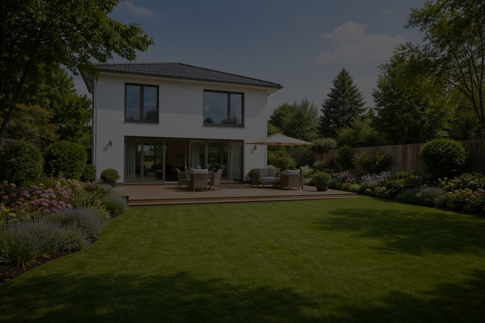
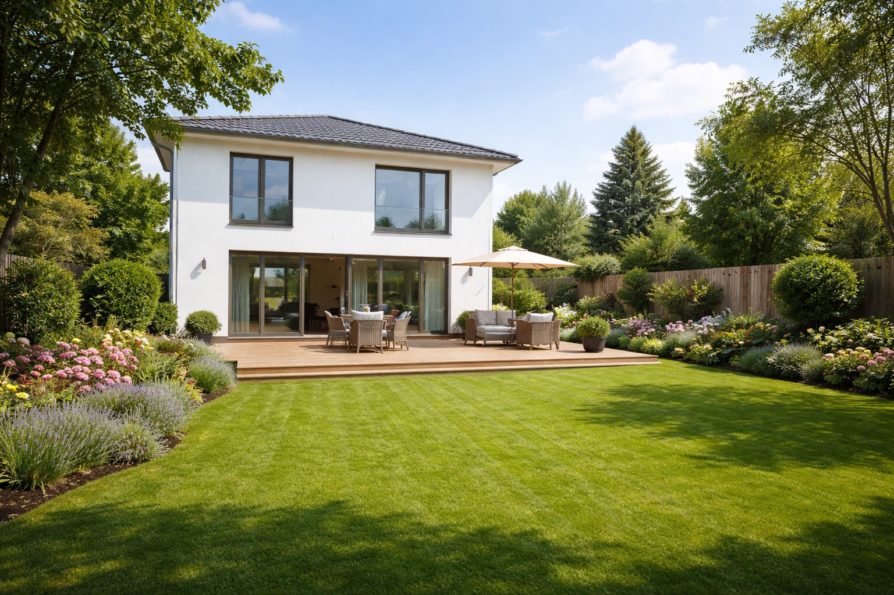

Rotovace a vertikutace

Máte-li zahradu rozrytou od divočáků nebo chcete-li jenom anglický trávník, jsme schopni za pomoci rotovátoru na našich malotraktorech rozbít drny až do hloubky 20ti centimetrů. Traktory nedostupná místa, například ve svahu, mezi stromy a podobně rekultivujeme rotovátory menšími. Provádíme také vertikutaci trávníků, které jsou prorostlé mechcem.
Provádíme také úklid zahrad a odvoz nepotřebného materiálu. Pro seniory poskytujeme slevy.
Nabízíme také možnost vyrovnání povrchu a zasetí nového trávníku.
Pracujeme v Opavě, Ostravě, Frýdku Místku, Novém Jičíně, Havířově, Třinci a dalších městech Moravskoslezského kraje.

| Orientační ceník (po dohodě a podle místních podmínek mohou být stanoveny ceny odchylně): | |
|---|---|
| Služba | Cena (pouze orientačně) |
| Rotavace traktorem Kubota | 700,- Kč/hod. |
| Vertikutace trávníků | 450,- Kč/hod. |
| Rotovace pojezdovým rotovátorem | 450,- Kč/hod. |
| Vyrovnání povrchu ruční | 250,- Kč/hod. |
| Výsev trávníku | 250,- Kč/hod. |
| Úklid zahrad | 250,- Kč/hod. |
| Doprava a odvoz materiálu | 10,- Kč/km |